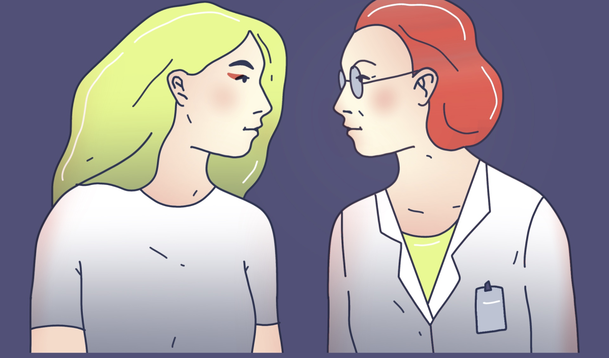
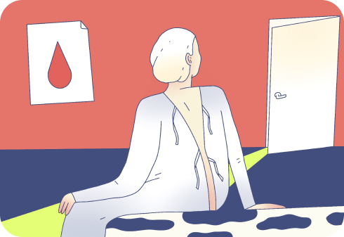
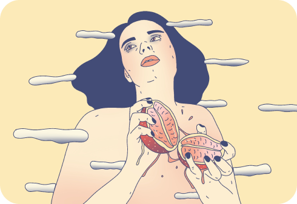
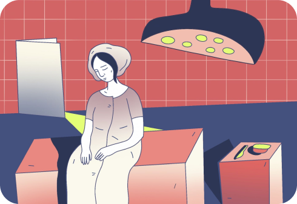
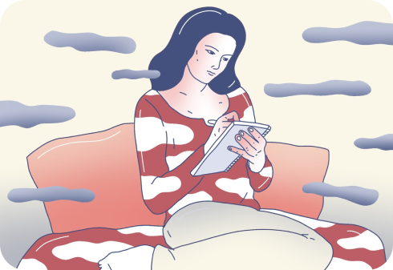
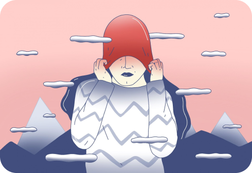
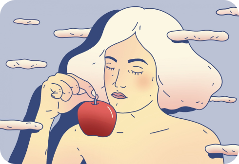

Раздевайтесь!
Это спецпроект о гинекологии, женских врачах и ситуациях, в которых мы чувствуем себя уязвимо. Каждая из нас на приёме у гинеколога слышала слово «раздевайтесь», но знаете ли вы, что осмотр на гинекологическом кресле нужен не всегда?
Кроме мифа о кресле, есть опасные манипуляции, бестактные замечания и вредные назначения, которые порой используют гинекологи. Чтобы помочь женщинам с этим бороться, мы готовим советы и инструкции. Мы — это медиа о здоровье «Купрум» и женское издание Burning Hut. Делитесь нашими материалами с сёстрами, подругами, мамами!
-

7 ситуаций на приёме у гинеколога, которые вы не должны терпеть
-

Что нужно знать о вагинизме, чтобы поход к гинекологу не был пыткой
-

Пять пугающих, но ошибочных утверждений гинеколога
-

Когда пора идти к гинекологу в первый раз и чего от него ждать
-

У меня эрозия шейки матки. Почему врач говорит ее прижигать?
-

Почему болит при месячных и спасут ли от этого роды?